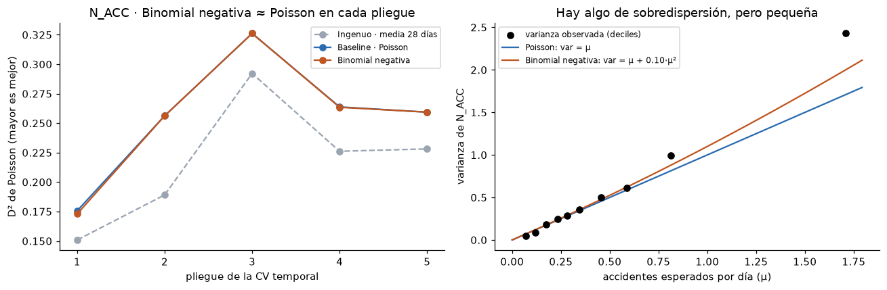
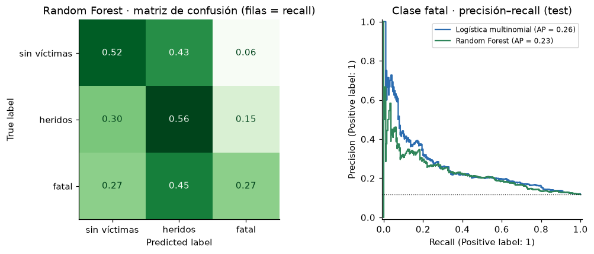
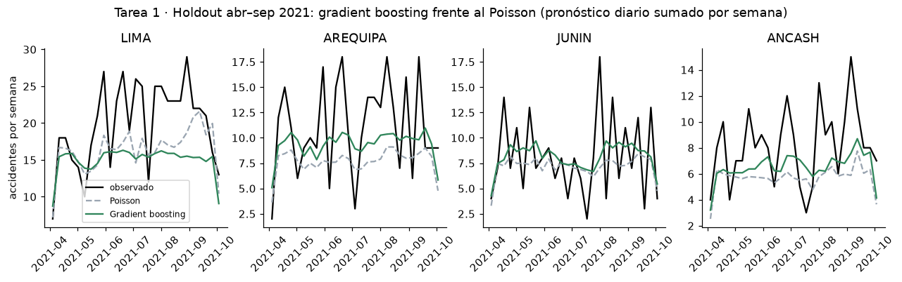
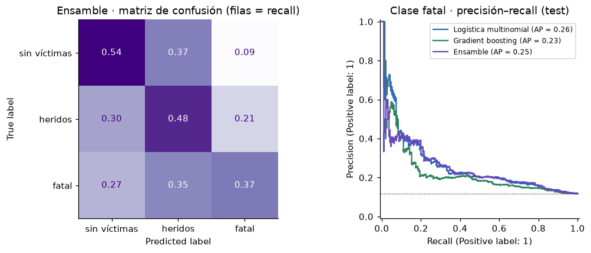
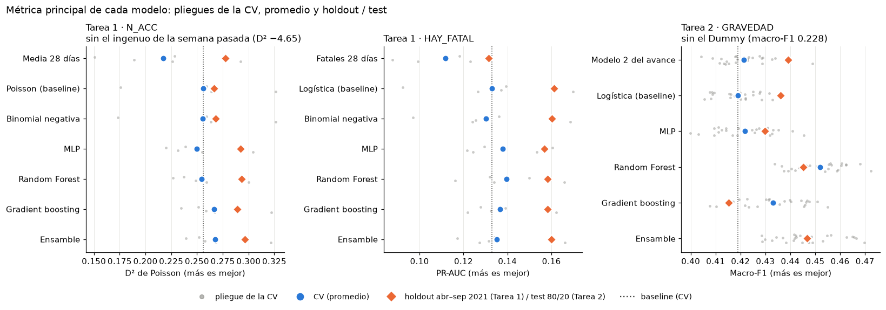
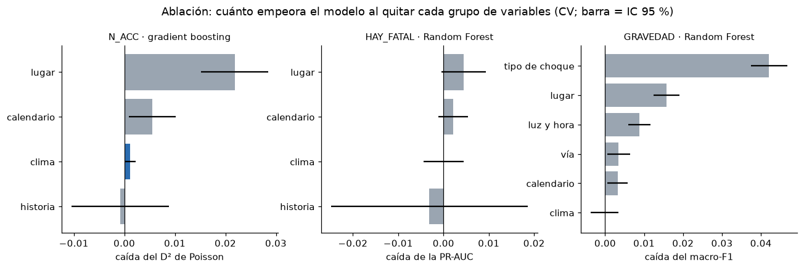

Pronóstico de riesgo y triaje de gravedad en las carreteras del Perú con datos abiertos de SUTRAN, la Red Vial Nacional del MTC y el clima de Open-Meteo.
La serie tiene memoria y cae con la cuarentena: mezclar días al azar filtraría el futuro. El holdout se usa una sola vez.
Los mismos 25 pliegues para todos los modelos; cada uno se compara con el baseline pliegue a pliegue (IC 95 %).
D² de Poisson (N_ACC): devianza explicada; 0 = predecir la media.
PR-AUC (HAY_FATAL): el azar es 0.06.
Macro-F1 (GRAVEDAD): pesa igual las tres clases; + PR-AUC de fatales.
| Variable | Referencia sin ML | Ref. | Baseline |
|---|---|---|---|
| N_ACC · D² | media de 28 días | 0.217 | 0.256 |
| HAY_FATAL · PR-AUC | fatales de 28 días | 0.112 | 0.133 |
| GRAVEDAD · macro-F1 | Dummy | 0.228 | 0.419 |
Poisson, logística y logística multinomial con pesos balanceados. Hay señal más allá de la inercia (Poisson gana a la media en 5 de 5 pliegues), pero con 67 columnas el modelo lineal no mejora al de 4 variables del avance (−0.002): sin interacciones, la vía, el clima y la luz no suman.
→ ¿Lo logran los modelos de la literatura?
NB2: media eXβ y varianza μ + αμ². Si α → 0 es un Poisson. Para HAY_FATAL se modela el número de fatales y P(≥ 1) = 1 − P(0). Penalización L2 elegida en la CV temporal (0.0001 a 1 → 0.001).
Lectura: el departamento, la historia y el calendario ya explican casi toda la variación extra. Mhetre y Thube modelan un solo tramo con pocas variables; aquí la historia la absorbe.

Por qué gana: la gravedad depende de combinaciones (atropello de noche en una recta) que un modelo lineal no ve. Búsqueda aleatoria de 20 combinaciones (hojas, max_features, profundidad, tipo de pesos). Costo: separa sin víctimas de heridos y sacrifica la clase fatal.

HistGradientBoosting con pérdida de Poisson y categóricas nativas. Grilla completa (72, 48 y 108 combinaciones). En la Tarea 1 eligió lo más regularizado: 100–150 árboles, tasa 0.03, 7 hojas. Con 10 776 departamento-días, más flexibilidad sobreajusta.

Empata con la logística (macro-F1 0.422 frente a 0.419) y ordena peor a los fatales. Varía con la semilla (± 0.009) tanto como la diferencia con el baseline. Emu et al. entrenan con 5.8 millones de choques; aquí hay 8 105.
N_ACC: el mejor en la CV (0.268) y en el holdout (0.296).
GRAVEDAD: mejor macro-F1 del test (0.447) y detecta el 37 % de los fatales
(RF 27 %, logística 51 %).
Nunca queda por debajo del baseline. Funciona donde los miembros discrepan (correlación 0.66–0.90 en fatales).


Gris: cada pliegue de la CV · azul: promedio · naranja: holdout (Tarea 1) o test (Tarea 2) · línea punteada: baseline. En N_ACC ninguno supera al Poisson con IC sin el 0 en la CV; en GRAVEDAD sí lo hacen el RF (+0.033), el ensamble (+0.028) y el GBM (+0.014).
Se reentrena el mejor modelo de cada variable quitando un grupo a la vez y se mide cuánto cae la métrica en la misma CV.
La historia es lo que más usa el modelo (permutación), pero lleva la misma información que el lugar.

D² 0.268 en la CV y 0.296 en el holdout. El GBM rinde casi igual con un solo modelo.
Todos empatan (PR-AUC ≈ 0.16, 2.4× el azar): gana el más simple y calibrado. Sirve para ordenar departamentos por riesgo.
RF por macro-F1 (0.452). Para un despacho que no puede perder fatales, el ensamble (37 % detectados).
La serie tiene memoria (la historia es lo que más usa el modelo) y cambia de nivel con la cuarentena. Con pliegues aleatorios el modelo vería días posteriores a los que pronostica: fuga del futuro. Además, toda la historia se calcula hasta t − 1.
Métricas que no lo esconden (PR-AUC, macro-F1, PR-AUC de fatales) y pesos de clase balanceados en GRAVEDAD. En HAY_FATAL no se usan pesos, para que las probabilidades queden calibradas (Brier 0.060). Sin sobremuestreo.
Predecir siempre «no fatal» acierta el 88 % de los accidentes y predecir 0 accidentes acierta el 66 % de los días. La exactitud premia ignorar justo los casos que importan.
No: el encoding se ajusta dentro de cada pliegue, el número de víctimas solo forma el objetivo, los hiperparámetros se eligen sin mirar el holdout ni el test, y estos se usan una sola vez.
Cada modelo se compara con el baseline pliegue a pliegue (IC 95 % aprox.). En GRAVEDAD sí: RF +0.033 (25/25), ensamble +0.028, GBM +0.014. En N_ACC y HAY_FATAL ningún IC excluye el 0 en la CV; la ventaja en N_ACC aparece en el holdout.
Promediar ayuda cuando los miembros se equivocan distinto. En el conteo predicen casi lo mismo (correlación 0.96–0.98) y aporta poco; en la clase fatal discrepan (0.66–0.90) y ahí combina las fortalezas del RF y la logística.
Medimos la lluvia de reanálisis en celdas de ~11 km (y la de la capital en la Tarea 1); su efecto queda absorbido por la estación y el lugar. Babaoglu y Babaoglu también hallan que la mayoría de muertes ocurre con clima no extremo.
Ellos usan 5.8 millones de choques con variables del vehículo y las personas; aquí hay 8 105 sin ellas. La grilla eligió la red más chica y su resultado depende de la semilla (± 0.009 de macro-F1).